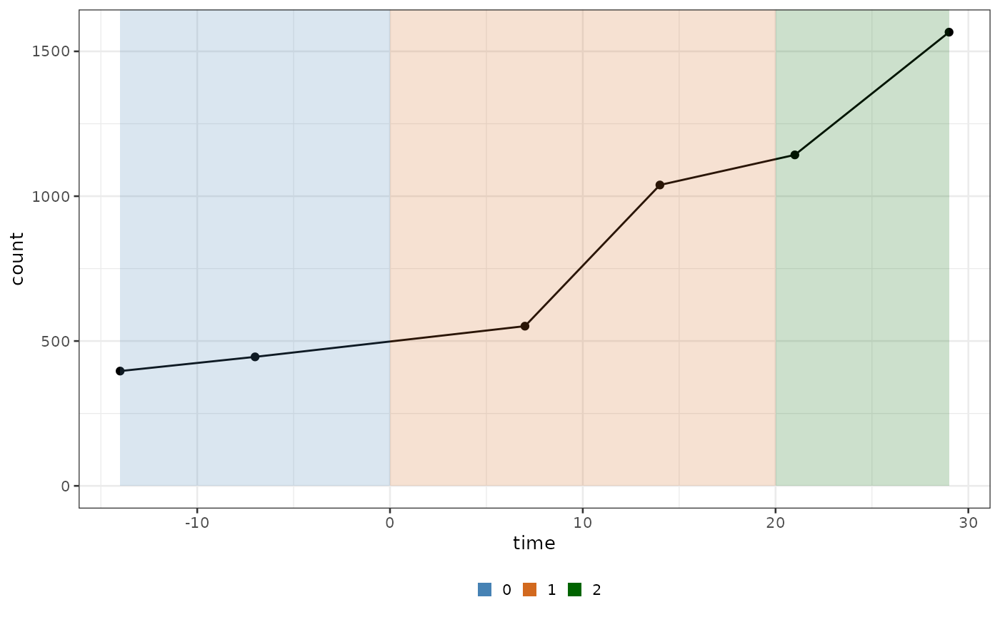

1. Introduction
a1_introduction.Rmd
library(biPOD)
require(dplyr)
#> Loading required package: dplyr
#>
#> Attaching package: 'dplyr'
#> The following objects are masked from 'package:stats':
#>
#> filter, lag
#> The following objects are masked from 'package:base':
#>
#> intersect, setdiff, setequal, unionInput format
The input for biPOD is a tibble with two columns:
-
timedenotes the instant of time in which each observation is collected -
countcontains the values of the observations which should be a proxy of a population size (e.g. number of cells, volume, …)
biPOD comes with a template dataset.
# Load template data
data("xenografts", package = "biPOD")Initialisation of a new dataset
To use biPOD you need to initialize a bipod
object with the initialisation function init.
When you create a new object it is required to explicit the sample name.
Additionally, since biPOD might deal with longitudinal
observations coming from different time windows (e.g Natural evolution,
Treatment, Relapse,…) divided by a set of breakpoints, the
user should also input them if known. (see below)
Example biPOD object
Let’s use one of the sample coming from the xenograft
data along with a made up set of breakpoints.
mouse_id <- 529
x <- biPOD::init(
counts = xenografts %>% dplyr::filter(mouse == mouse_id) %>% dplyr::mutate(count = tumour_volume),
sample = mouse_id,
break_points = c(0, 20)
)
#>
#> ── biPOD - bayesian inference for Population Dynamics ──────────────────────────
#> ℹ Using sample named: 529.
#> ! No group column present in input dataframe! A column will be added.If you look at the modified counts you will see that the observations have been grouped in different time windows
biPOD::plot_input(x, add_highlights = T)